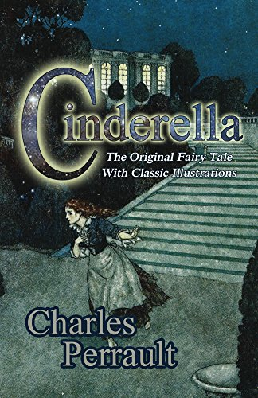

The Timekeeper's Vault
Welcome to your reading journey! 😊

7 mins read
Deep in the heart of the Whispering Woods lay a hidden vault, known only to those brave enough to seek it—the Timekeeper's Vault. Legend spoke of its power to reveal the past and glimpse the future, a treasure guarded by ancient forces.
Emma, a curious historian, had always been drawn to tales of the Vault. Her great-grandfather had vanished while searching for it, leaving behind only a cryptic journal. Determined to uncover the truth, Emma embarked on the perilous journey.
The forest was alive, whispering secrets of its own. Each step felt heavier as she followed the journal's riddles. "When the sun meets the shadow of the crescent oak, the Vault shall appear," it read. Time seemed to bend and twist, leaving Emma unsure whether hours or days had passed.
Finally, she reached the crescent oak, its branches forming a perfect arc against the twilight sky. As the sun dipped, a doorway shimmered into existence. Steeling her nerves, Emma stepped inside.
The Vault was unlike anything she imagined. Clocks of every size and shape adorned the walls, their hands moving in synchronized chaos. At the center stood the Timekeeper—a figure cloaked in flowing robes, its face hidden. In a voice both commanding and gentle, it spoke: "You may ask one question. Choose wisely."
Emma’s heart raced. She thought of her great-grandfather and the mysteries that plagued her family. With a deep breath, she asked, "What happened to him?"
The Timekeeper raised a hand, and the clocks whirred to life. Images of the past danced before her eyes, revealing her great-grandfather’s fate. He had chosen knowledge over family, trading his time to unlock the secrets of the universe.
Emma left the Vault, carrying a bittersweet truth. She vowed never to lose herself in the pursuit of answers, cherishing the time she had with those she loved.
Image Description for the Layout:
A mysterious and ethereal image of a glowing doorway in an enchanted forest. The doorway is surrounded by ancient oak trees, with shimmering golden and blue light spilling out, suggesting a connection to time and mystery. A young woman is depicted stepping into the doorway, her figure partially illuminated.